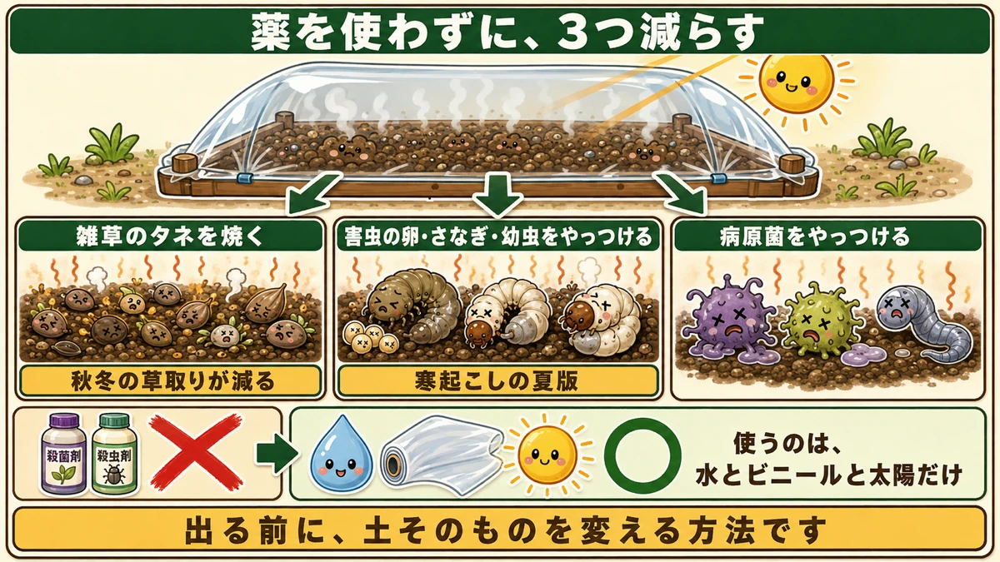
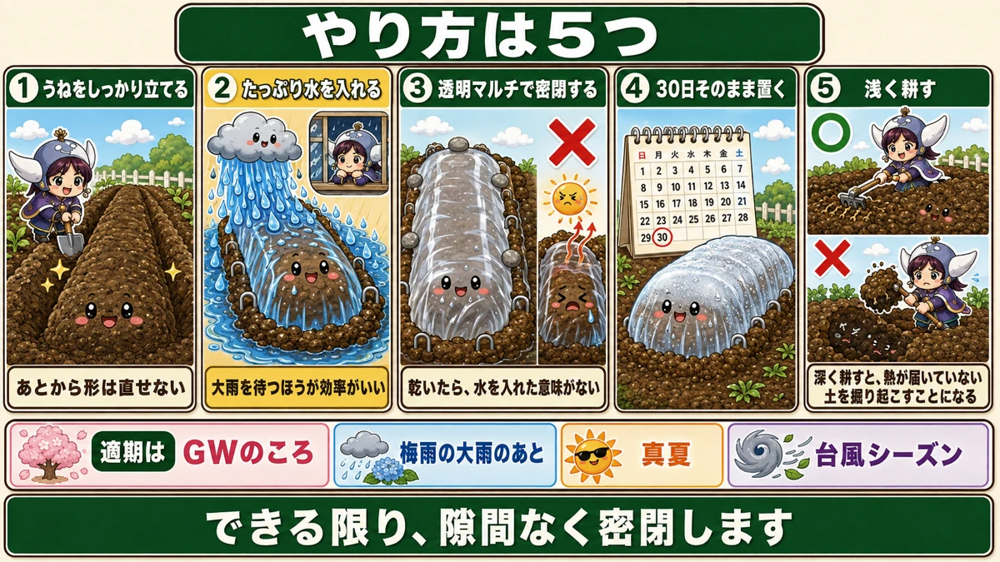
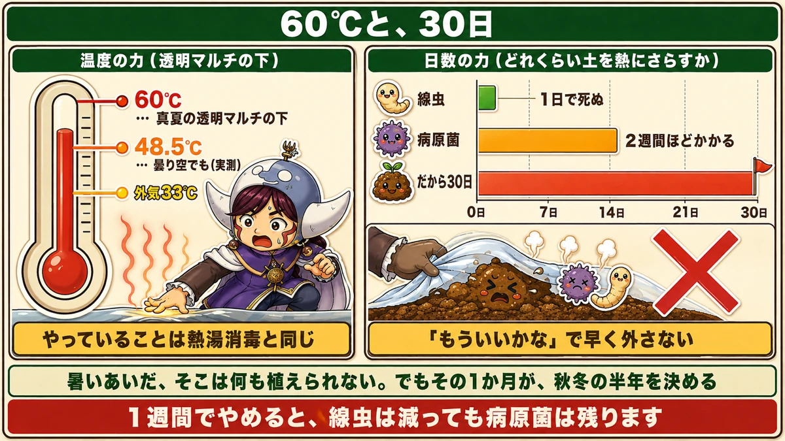
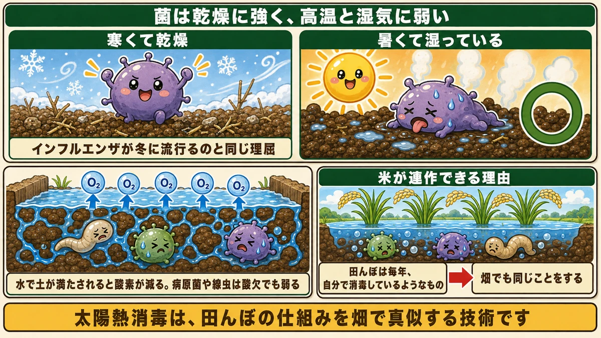

太陽熱消毒のやり方｜水と透明マルチで土を温める手順・期間の目安・終わったあとの耕し方
どうも、8150（えいこう）です🌱 家庭菜園歴8年、理科の教員免許を持っていて、有機・無農薬で野菜を育てています。
📖 この記事の目次
この記事で分かること
- 太陽熱消毒は、夏の強い日差しを使って、畑の土を温め、土の中の病気のもとや虫の卵、雑草の種を減らす方法です。
- やり方はシンプルです。土を湿らせて、透明なマルチ（ビニール）ですき間なく覆い、晴れた日が続くあいだ置いておきます。
- 晴れた夏の日には、覆いの中の土が50〜60度くらいまで上がることがあります。
- 期間は、2週間程度という説明から、1か月程度という説明まであります。
- 終わったあとは、深く耕さないのが大切です。熱が届いていない深い土を混ぜてしまうからです。
- ただし、すべての病気に効くわけではありません。深いところの菌や、一部の病気には効きにくいという説明もあります。
夏野菜を育てていて、「去年と同じ場所に植えたら、病気が出た」「毎年、同じ畝だけ育ちが悪い」と感じたことはありませんか。
薬を使わずに、土の中の病気のもとや虫を減らしたい。そんなときに、ぜひ知っておいてほしいのが、太陽熱消毒です。必要なのは、水と、透明なマルチと、夏の太陽だけ。特別な薬も機械もいりません。家庭菜園でも、すぐに始められる方法です。
この記事では、太陽熱消毒のしくみと、手順、期間の目安、終わったあとに気をつけることまで、順番に書いていきます。説明が分かれているところも、並べて比べています。

早見：太陽熱消毒の基本（ひと目で分かる目安）
期待できる効果
- 土の中の病気のもと（病原菌）を減らす
- 土の中にいる虫の卵、さなぎ、幼虫を減らす
- 土の表面近くにある雑草の種を減らす
用意するもの
- 透明なマルチ、またはトンネル用の透明なビニール（穴のあいていないもの）
- 水（ホースやじょうろ。雨のあとなら、その水分を使える）
- マルチを留める土、ピン、石など
- あれば温度計
手順の流れ
- 畑を耕して、かんたんな畝を作る
- 土をたっぷり湿らせる
- 透明なマルチで、すき間なく覆う
- 晴れた日が続くあいだ、そのまま置く
- 終わったら、表面だけを浅くほぐす
覚えておきたい目安
- 覆いの中の温度：晴れた夏の日で50〜60度くらいになることがある
- 期間：2週間程度〜1か月程度（説明が分かれる）
- 向いている時期：気温が高く、晴れの日が続く7月〜8月
- 終わったあと：深さ3〜10cmくらいまでを軽くほぐす程度に
作業の手順
ここからは、太陽熱消毒の手順を、順番に書いていきます。
手順1：時期と場所を決める
太陽熱消毒は、気温が高く、晴れの日が続く時期にやるのがいちばん効果的です。7月から8月の真夏が向いています。
夏野菜を片づけた場所や、秋冬野菜を植える予定の場所でやることが多いです。秋冬野菜の植えつけは9月ごろなので、そこから逆算して、8月中に終えられるように計画します。
夏まきのにんじんを予定している場所なら、その前に行う、という方法もあります。いずれにしても、太陽熱消毒のために、後の野菜の種まきや植えつけが大きく遅れないように、全体の予定を考えておいてください。
夏野菜の片づけから、消毒までの段取り
太陽熱消毒は、夏野菜の片づけとセットで考えると、段取りがつけやすくなります。
- 7月の終わりから8月の初め：実のつきが悪くなった夏野菜から順に片づける
- 片づけたら：根や茎を取り除き、病気が出ていた株は畑の外に出す
- すぐに：耕して、畝を作り、土を湿らせて覆う
- 2週間〜1か月後：マルチを外して、表面をほぐす
- 8月末〜9月：秋冬野菜の種まき・植えつけ
夏野菜を長く引っぱりすぎると、消毒の期間が取れなくなり、秋冬野菜の植えつけも遅れてしまいます。消毒したい畝は、少し早めに夏野菜を切り上げる、という判断も必要です。
太陽熱消毒に向く場所・向かない場所
- 向いている：日当たりがよく、一日中日が当たる場所。前の年に病気が出た場所。同じ野菜を続けて育てたい場所
- 向いていない：建物や木の陰になる時間が長い場所。水はけが極端に悪く、いつも水がたまる場所
日陰の時間が長いと、土の温度が十分に上がりません。一日中、強い日が当たる場所ほど、効果が出やすくなります。
手順2：畑を耕して、畝を作る
消毒する場所の土を耕します。前の野菜の根や茎、大きな石などは取り除いておきます。
耕したら、かんたんな畝を作ります。きれいに作る必要はありません。小高い畝ができていれば十分です。消毒が終わって、植えつけの前にマルチを張り替えるときに、形を整え直すこともできます。
後作の肥料を先に入れておく場合は、このときに肥料も混ぜこんでおきます（肥料を入れるかどうかは、説明が分かれています。あとで書きます）。
米ぬかを混ぜる方法
耕すときに、米ぬかを土に混ぜてから湿らせて覆う、という方法もあります。
米ぬかを混ぜると、土の中の微生物がそれを食べて一気に増え、そのときに土の中の酸素をたくさん使います。そのため、土の中がより酸素の少ない状態になり、病気のもとが住みにくくなる、と説明されます。また、微生物が米ぬかを分解するときに出る熱も、温度を上げる助けになると言われます。
ただし、米ぬかを入れすぎると、分解のときにガスが出たり、においが強くなったりします。量は控えめにして、消毒が終わってから植えつけまでの期間も考えておきましょう。米ぬかを入れた場合は、後作の肥料としても効いてくるので、追加の肥料は控えめにします。
手順3：土をたっぷり湿らせる
ここが、太陽熱消毒でいちばん大事なところです。
乾いた土では、熱が深くまで伝わりにくくなります。土をたっぷり湿らせておくと、太陽の熱が表面だけでなく、深いところまで届きやすくなります。
- ホースやじょうろで、土の深くまでしみこむように、たっぷり水をまく
- 目安として、深さ15〜20cmくらいまで水がしみこむくらい
- 雨が降ったあとなら、その湿った土をそのまま使ってもいい
雨を利用する場合は、雨が降る前に耕したり畝を作ったりしておき、雨がやんだらすぐに覆う、という順番にすると、水やりの手間が省けます。
手順4：透明なマルチで、すき間なく覆う
湿らせた土の上に、透明なマルチをかぶせます。
- 黒いマルチではなく、透明なものを使う（日の光が土に直接届いて、土がよく温まる）
- 穴のあいていないものを使う。古いマルチなら、穴や破れがないか確かめる
- すそは、土をかぶせたり、ピンや石で留めたりして、すき間をふさぐ
すき間があると、そこから熱が逃げてしまいます。また、夏の熱い風が吹きこむと、せっかく湿らせた土が一気に乾いてしまいます。マルチの周りは、しっかりふさいでください。

マルチの選び方
- 色：透明なもの。黒や白、銀色のものは、消毒にはあまり向かない
- 穴：穴のあいていないもの。植えつけ用の穴あきマルチは使えない
- 大きさ：畝全体と、すそを留める分まで覆える大きさ
- 厚さ：薄いものでも使えるが、夏の強い日差しで傷みやすい。古いマルチは破れや穴がないか確かめる
トンネル用の透明なビニールを、畝の上に直接かぶせて使うこともできます。使い終わったマルチは、破れていなければ、次の年の消毒にも使えます。
手順5：晴れた日が続くあいだ、置いておく
覆ったら、あとはそのまま置いておきます。
期間の目安は、説明によってかなり幅があります。2週間程度で終わるという説明もあれば、1か月程度、涼しい地域なら1か月半ほど見込むという説明もあります。
晴れの日が多く、気温が高いほど、短い期間でも効果が期待できます。曇りや雨の日が多い年は、長めに置いてください。
ただし、後に植える野菜の時期が迫っているなら、1か月に満たなくても、早めに切り上げることがすすめられています。消毒のために後の野菜の植えつけが遅れては、本末転倒だからです。
手順6：温度を測ってみる（できれば）
温度計があれば、マルチの中の土に差して、温度を測ってみてください。
晴れた夏の日には、50度を超えることがあります。曇りの日でも、40度台後半まで上がったという例もあります。
温度計を差してすぐは、まだ正しい温度を示さないことがあるので、しばらく待ってから読みます。ただ、測れるのは差したところの温度だけで、深いところまで同じ温度になっているとはかぎりません。目安として見てください。

手順7：終わったら、表面だけを浅くほぐす
期間が終わったら、マルチを外します。外すのは、晴れた日の朝など、土が熱くなりすぎていない時間がおすすめです。
ここで大事なのは、深く耕さないことです。熱が届いて消毒できたのは、土の表面に近い部分です。深く耕すと、熱が届いていない深いところの土を、表面に混ぜこんでしまいます。せっかく消毒した土が、また元に戻ってしまうんですね。
- 表面がかたくなっていたら、表面だけを軽くほぐす
- ほぐす深さは、3〜5cmくらいという説明から、10cmくらいという説明まである
- 肥料をすでに入れてある場合は、もう一度入れなくていい
マルチを外したあとは、そのまま種をまいたり、植えつけ用のマルチに張り替えて苗を植えたりします。
後作の野菜ごとのつなぎ方
- 白菜・キャベツ・ブロッコリー：消毒が終わったら、黒いマルチに張り替えて苗を植える方法がよく紹介される。苗の葉が熱いマルチに直接ふれないように気をつける
- 大根・かぶ：消毒後、表面を軽くほぐして、そのまま種をまく。大根は根が深く伸びるので、深く耕したくなるが、消毒の効果を生かすなら浅めに
- にんじん：夏まきのにんじんの前に消毒をしておき、終わったら表面を整えて種をまく。雑草が生えにくくなるので、小さいうちの草取りが楽になる
どの野菜でも、終わったあとに深く耕さない、という点は共通です。
作業中の安全
- 晴れた夏の日のマルチは、さわるとやけどしそうなほど熱くなることがある。素手で長くさわらない
- 真夏の作業になるので、朝夕の涼しい時間に、こまめに水分をとりながら作業する
- 子どもやペットが、マルチの上に乗ったり、はがしたりしないように気をつける
手順8：植えつけたあとの注意
消毒した土に植えたからといって、そのあと虫や病気がまったく出なくなるわけではありません。
- 外から飛んでくる虫には効かないので、防虫ネットは別に必要
- 植えつけたあと、苗の葉が熱いマルチに直接ふれないようにする
- 病気が出た株は、早めに抜いて畑の外に出す
太陽熱消毒は、あくまで「スタートの土をきれいにする」方法です。その後の見回りや手入れは、いつもどおり続けてください。
なぜ、太陽熱で土が消毒できるのか
菌は、乾燥に強く、高温と湿気に弱い
土の中の病気のもとになる菌の多くは、乾燥には強いけれど、高い温度と湿気には弱い、と説明されます。
乾いた状態だと、菌はじっと耐えて生き残ります。でも、湿った状態で高い温度が続くと、弱ってしまうんです。太陽熱消毒で、まず土をたっぷり湿らせるのは、この弱点をつくためです。

水が、熱を深くまで運ぶ
乾いた土は、すき間に空気が多く、熱を伝えにくい性質があります。湿った土は、すき間が水で満たされていて、熱が伝わりやすくなります。
だから、土を湿らせておくと、太陽の熱が表面だけでなく、深いところまで届きやすくなるんです。
酸素が少なくなることも効く
水で湿らせて、マルチで密閉すると、土の中の酸素が少なくなります。酸素を必要とする菌や虫にとっては、住みにくい環境になります。
田んぼでは、米を同じ場所で何年も作り続けられます。水を張ることで、土の中が酸素の少ない状態になり、病気のもとが増えにくいからだ、と言われます。太陽熱消毒も、畑をできるだけ水びたしにして、さらに太陽熱で温める、という考え方につながっています。
なぜ透明なマルチを使うのか
黒いマルチは、日の光を吸って、マルチそのものが熱くなります。その熱が土に伝わりますが、光そのものは土に届きません。
透明なマルチは、日の光をそのまま通して、土に直接当てます。光で温まった土の熱は、マルチがふたになって逃げにくくなります。だから、黒いマルチより、土の温度がずっと高くなるんです。
適期はいつか
いちばん向いているのは真夏
気温が高く、晴れの日が続く7月から8月が、いちばん効果が出やすい時期です。夏野菜を片づけたあと、秋冬野菜を植えるまでのあいだに行うのが一般的です。
春や秋は、条件しだい
ゴールデンウィークのころなど、春でも気温が高い日が続けば、期間を長めにとることで、ある程度の効果が期待できる、という説明もあります。ただ、夏ほど土の温度は上がらないので、同じ効果を期待するのはむずかしいです。
冬は、目的が変わる
冬に透明なマルチで土を覆う方法もあります。ただ、冬は土の温度が上がりにくいので、病気のもとを熱で減らすというより、土の中の微生物の働きを助けて、土をよくする（土づくり）という目的になります。
冬にやっても、夏と同じように消毒できる、とは考えないでください。
失敗の見分け方
マルチの中の温度が上がらない
- 晴れの日が少なかった
- 土が乾いていた（湿らせ方が足りなかった）
- マルチにすき間や穴があって、熱が逃げていた
- 黒いマルチや、白いマルチを使っていた
晴れの日が続く時期を選び、土をしっかり湿らせて、すき間なく覆ってください。
消毒したのに、雑草が生えてきた
- 深く耕して、熱が届いていない深いところの雑草の種を、表面に出してしまった
- マルチの外（畝と畝のあいだ）から生えてきた
- 期間が短く、温度が十分に上がらなかった
マルチの中では雑草が生えていないのに、畝のあいだには生えている、ということもよくあります。マルチで覆った部分には、ちゃんと効果が出ている証拠です。
消毒したのに、病気が出た
- 深いところにいる菌には、熱が届いていなかった
- 消毒が効きにくい種類の病気だった
- 病気のもとが、外から入ってきた（苗、道具、雨水、ほかの畑の土など）
太陽熱消毒は、病気のもとを減らす方法であって、ゼロにする方法ではありません。たとえば、青枯れ病のように、深いところにいる菌が原因になる病気は、完全に防ぐのはむずかしいと言われます。病気が続く場所なら、植える野菜を変えたり、接ぎ木苗を使ったりする方法と組み合わせてください。
マルチが風で飛ばされた
すそを留める土や重しが足りなかった可能性があります。夏は台風や強い風の日もあるので、すそはしっかり土をかぶせて留めておきます。飛ばされたら、もう一度土を湿らせてから覆い直してください。
透明マルチの下で、雑草がどんどん育った
透明なマルチの下は、光が届くうえに温かいので、温度が十分に上がらないと、逆に雑草がよく育ってしまうことがあります。
晴れた日が少なかった、すき間から風が入って温度が下がった、といった原因が考えられます。マルチの下で雑草が青々と育っていたら、消毒の温度まで上がっていなかったサインです。いったん外して草を取り、天気のいい時期を選んでやり直すか、次の年に時期を見直してください。
夏にできなかったときの代わりの方法
太陽熱消毒の時期を逃してしまったり、日当たりの条件が合わなかったりする場合は、次のような方法で、病気や連作の影響をやわらげることができます。
- 前の年と違うなかま（科）の野菜を植える
- 病気に強い接ぎ木苗を使う
- たい肥を入れて、土の中の生き物を豊かにする
- 病気の出た株は、早めに抜いて畑の外に出す
- 水はけをよくするために、畝を高くする
太陽熱消毒は、たくさんある方法のひとつです。できる方法を組み合わせて、畑を守っていきましょう。
説明が分かれていること
期間：2週間か、1か月か
- 2週間程度で完了する、という説明
- 高温の時期で約3週間、1か月くらいを見込む、という説明
- 涼しい地域では、いちばん暑い時期に1か月半くらい、という説明
- 後の野菜の予定が迫っているなら、1か月に満たなくても早めに切り上げる、という説明
その年の天気、地域、何を減らしたいかによって変わります。迷ったら、後の野菜の予定に間に合う範囲で、なるべく長めに置く、と考えるといいと思います。
肥料を入れてからやるか、水だけでやるか
- 土だけでは酸素が少ない状態になりにくいので、必ず肥料を入れてからやる、という説明
- 後の野菜が決まっていないなら、肥料は入れなくていい、という説明
- 水だけでも効果がある、という説明
肥料や米ぬかを入れると、微生物がそれを分解するときに土の中の酸素を使うので、より酸素の少ない状態になる、という考え方があります。一方で、水だけでも効果は期待できるので、慣れていないうちは水だけで始めてみる、という方法もあります。
肥料を先に入れた場合は、消毒が終わったあと、もう一度入れなくていい点にも気をつけてください。
水は必ず入れるか
- 土の深くまで熱を届けるために、水は必要、という説明
- 水が多いほうが効率よく深くまで熱が回るが、絶対ではない。できる範囲で、という説明
雨のあとなど、土がすでに湿っていれば、水やりは省けます。乾いた土のままよりは、湿らせたほうが効果が上がりやすい、と考えてください。
細菌やウイルスにも効くか
- 細菌やウイルスには効果がないので注意、という説明
- カビのなかま、細菌、ウイルス、センチュウなどに広く効く、という説明
方法や、上がった温度、使った資材がそれぞれ違うので、どちらかに決めることはできません。少なくとも、「どんな病気でも防げる」とは考えないでください。
よい微生物まで減ってしまわないか
- よいものも悪いものも、まとめて減らしてしまう、という説明
- 高温に強い、よい微生物は生き残る、という説明
終わったあとに水をやると、生き残った微生物がまた増えていく、という説明もあります。いずれにしても、終わったあとにたい肥などを入れて、土の生き物を育てていく意識は持っておくといいと思います。
畝は先に立てるか、平らにしておくか
- 先に畝を立ててから覆う、という方法
- 平らにならしてから覆い、終わったあとに畝を立てる、という方法
終わったあとに畝を立てると、深いところの土が上がってくることがあるので、先に畝を立てておくほうが、深い土を混ぜにくくなります。平らにして覆う場合は、畝を立てるときに深く掘りすぎないよう注意してください。
終わったあと、ほぐす深さ
- 深さ3〜5cm程度を軽くほぐす、という説明
- 10cmくらいまでほぐす、という説明
どちらの説明も、「深いところの土を上に持ってこない」という点では共通しています。種をまくだけなら浅めに、苗を植える場合は植え穴の分だけ掘る、と考えるといいと思います。
石灰窒素を使う方法
石灰窒素という資材を土に混ぜてから、太陽熱消毒をする方法も紹介されています。石灰窒素は肥料でもあり、農薬としての性質も持つ資材です。
この記事では、薬を使わない方法を前提にしているので、水と太陽だけの方法を中心に書いています。水だけの方法でも、十分に効果が期待できると説明されています。
よくある質問
Q. 小さな畑やプランターでもできますか？
A. 小さな畑でも、畝1本からできます。まずは、去年病気が出た場所や、気になっている畝を1本だけ試してみると、効果を実感しやすいと思います。プランターの土なら、黒いビニール袋に湿らせた土を入れて口を閉じ、日当たりのよいコンクリートの上などに置いておく方法もあります。袋の中が高温になるので、同じような効果が期待できます。
Q. 透明なマルチがなければ、黒いマルチでもいいですか？
A. 黒いマルチでも土は温まりますが、透明に比べると温度が上がりにくくなります。病気のもとを熱で減らす目的なら、透明なマルチがおすすめです。土づくりが目的なら、黒いマルチでも少し温度は低いものの効果がある、という説明もあります。
Q. 期間中、マルチを開けて中を見てもいいですか？
A. 消毒が目的なら、途中で開けないほうがいいです。開けると、熱と湿気が逃げてしまいます。どうしても中のようすが気になるときは、マルチの外から手を当てて温かさを確かめたり、内側の水滴のつき方を見たりするだけにしておきましょう。土づくりが目的の方法では、1週間に1回くらい開けて水を補う、という説明もありますが、消毒とは目的が違います。
Q. 太陽熱消毒をしたら、連作障害はなくなりますか？
A. 連作障害の原因のひとつである、土の中の病気のもとや虫を減らす効果は期待できます。ただ、深いところの菌や、土の養分のかたよりなど、ほかの原因もあるので、連作障害がすっかりなくなるとは言えません。作物を変える、たい肥を入れるなど、ほかの方法とも組み合わせてください。
Q. 終わったあと、すぐに植えてもいいですか？
A. はい、マルチを外して、表面を軽くほぐしたら、種をまいたり苗を植えたりできます。表面が乾いていたら、種をまく前に軽く水をやってください。肥料を先に入れていた場合は、その肥料がちょうど土になじんでいるころです。
Q. 毎年やったほうがいいですか？
A. 病気が出やすい場所や、同じ野菜を続けて育てたい場所なら、毎年やる価値があります。トマトやナスなど、毎年同じ場所で育てたくなる野菜の畝は、特におすすめです。畑全部を一度にやるのが大変なら、気になる畝から順番にやっていくといいと思います。
Q. 消毒したあと、たい肥を入れてもいいですか？
A. 入れてかまいません。ただし、たい肥を混ぜるために深く耕すと、消毒の効果が薄れてしまいます。たい肥は表面近くに浅く混ぜるか、植え穴に入れる程度にしておくといいと思います。よく熟したたい肥を使えば、植えつけまでの期間を長くとらなくても大丈夫です。
Q. 消毒が終わったマルチは、どうすればいいですか？
A. 破れや穴がなければ、土を落として乾かし、たたんでしまっておけば、次の年の消毒にも使えます。夏の日差しで傷んで薄くなっていたり、破れていたりする場合は、地域のごみの分け方に従って処分してください。畑に細かいかけらが残らないように、外すときは丁寧に回収しましょう。
Q. 市民農園の区画でもできますか？
A. 区画の中だけなら、多くの場合できます。ただ、農園によっては、マルチの使い方や、区画を空けておける期間に決まりがあることもあるので、管理している人に確かめてから始めてください。区画が狭いぶん、マルチ1枚で区画全体を覆えることも多く、手軽に取り組めます。
Q. 消毒中の畝のまわりの草は、どうすればいいですか？
A. 畝と畝のあいだの通路は、マルチで覆っていないので、雑草が生えてきます。通路の草は、ふだんどおり刈り取っておきましょう。通路の草が伸びて、マルチのすそを持ち上げたり、すき間を作ったりすることがあるので、ときどき見回ってください。
Q. 秋や冬に病気が出た畑は、どうすればいいですか？
A. 病気が出た株は、根ごと抜いて畑の外に出してください。その場所は、次の夏に太陽熱消毒をする候補として覚えておきましょう。冬のあいだは、深く耕して土を寒さにさらす「寒起こし」をしておくと、土の中の虫を減らす助けになると言われます。
Q. 雨が続いて、なかなか晴れません
A. 曇りや雨の日が多いと、土の温度が十分に上がらず、効果が出にくくなります。その場合は、期間を長めにとってください。ただし、後の野菜の植えつけが遅れそうなら、そこで切り上げることも大切です。消毒が不十分だったと感じたら、植えつけたあとの見回りを、いつもより丁寧にしておきましょう。
Q. 肥料を入れ忘れたまま覆ってしまいました
A. 大丈夫です。水だけでも効果は期待できます。消毒が終わったら、表面を軽くほぐすときに、表面近くに肥料を混ぜるか、植えたあとに追肥で補ってください。肥料を入れるために深く耕し直すと、消毒の効果が薄れてしまうので、浅く混ぜる程度にしておきます。
Q. 消毒したあと、いつまで効果が続きますか？
A. はっきりとした期間は決まっていません。外から虫が飛んできたり、雨水や道具、靴の泥などで病気のもとが運ばれてきたりするので、時間とともに少しずつ元に戻っていきます。深く耕さない、病気の株を早めに片づける、といった日々の管理で、効果を長持ちさせることができます。
Q. 温度計がありません。効果が出ているか分かりますか？
A. 温度計がなくても、晴れた日にマルチの上から手を当ててみると、中がかなり熱くなっているのが分かります。マルチの内側に水滴がたくさんついていれば、土が湿っていて、熱がこもっているサインです。終わったあと、マルチの中に雑草が生えていなければ、ちゃんと温度が上がっていた証拠のひとつになります。
学ぶ🔬 なぜ深く耕すと、効果が台無しになるのか
ここからは、太陽熱消毒のしくみについて、少しだけ深く書いておきます。読み飛ばしても大丈夫です。
熱は、上から下へゆっくり伝わる
太陽の熱は、土の表面から少しずつ下へ伝わっていきます。表面に近いほど温度は高く、深くなるほど温度は低くなります。
ある測定の例では、気温35度の日に、透明なシートの下は57度くらいまで上がった一方、深さ15cmくらいのところは40度くらいだった、という話があります。表面と深いところでは、これだけ温度に差があるんです。
深い土は、消毒されていない
病気のもとや雑草の種は、高い温度が続くことで弱っていきます。表面に近い土は、十分に高い温度になるので効果が出やすいですが、深いところの土は、そこまで温度が上がりません。
終わったあとに深く耕すと、消毒されていない深い土が表面に上がってきて、消毒された土と混ざってしまいます。せっかく減らした病気のもとや雑草の種を、自分で表面に戻してしまうことになるんですね。
表面の「かたい層」だけをほぐす
太陽熱消毒のあとの土の表面は、乾いてかたくなっていることがあります。焼き菓子の表面のように、薄くかたい層ができているイメージです。
このかたい層だけを軽く崩して、種をまいたり苗を植えたりしやすくするのが、終わったあとの作業です。深く掘り返すのではなく、表面をなでるようにほぐす。これが、太陽熱消毒の効果を最大限に生かすコツです。
測った温度の読み方
温度計で測った温度は、とても参考になります。ただ、いくつか気をつけたいことがあります。
- 測れるのは、温度計の先が入っている深さの温度だけ。表面と深いところでは、温度がまったく違う
- 同じ畑でも、時間帯や、その日の天気で大きく変わる
- 「何度になったら、この病気が必ず消える」という決まった対応表があるわけではない
たとえば、ある測定では最終的に69度まで上がったという例があり、別の測定では50度台前半だった、という例もあります。測った条件がそれぞれ違うので、数字だけを比べることはできません。温度計は「ちゃんと温まっているか」を確かめるための目安として使ってください。
太陽熱で土づくり、という考え方
最近は、太陽熱を「消毒」としてだけでなく、「土づくり」に使う考え方もあります。
土を湿らせて覆い、温めると、土の中の微生物が活発に動き出し、土の中の有機物の分解が進みます。その結果、土がやわらかくなったり、野菜が育ちやすい状態になったりする、という考え方です。
この場合は、病気のもとをやっつけることより、微生物の働きを助けることが目的なので、途中で開けて水を補ったり、黒いマルチを使ったりすることもあります。同じ「覆って温める」でも、消毒が目的か、土づくりが目的かで、やり方が少し変わるんですね。
連作障害と、太陽熱消毒の関係
同じ場所に同じなかまの野菜を続けて植えると、育ちが悪くなったり病気が出やすくなったりします。これを連作障害と言います。
連作障害の原因には、いくつかあると言われます。
- その野菜を好む病気のもとが、土の中に増える
- その野菜の根を食べる虫（センチュウなど）が増える
- 土の養分がかたよる
太陽熱消毒が効くのは、主に最初の2つ、病気のもとと虫の部分です。養分のかたよりには、たい肥を入れたり、違うなかまの野菜を植えたりする方法が向いています。太陽熱消毒だけで連作障害がすべて解消するわけではない、というのは、このためです。
センチュウという小さな虫
センチュウは、土の中にいる、目に見えないほど小さな虫です。種類によっては、野菜の根に入りこんで、こぶを作ったり、根を傷めたりします。根にこぶがたくさんできた野菜は、水や養分をうまく吸えなくなり、育ちが悪くなります。
センチュウも、湿った状態で高い温度が続くと弱ると言われます。夏野菜を抜いたとき、根にこぶがたくさんついていたら、その場所は太陽熱消毒をしておく価値があります。
なぜ雑草の種も減るのか
雑草の種の多くは、土の表面近くにあります。表面近くの土は、太陽熱消毒でいちばん温度が上がる部分です。
湿った状態で高い温度にさらされると、種は芽を出そうとして動き始めたところで熱にやられたり、そのまま弱ったりします。だから、マルチの中では、雑草が生えにくくなるんです。深く耕さなければ、その効果がしばらく続きます。
まとめ
ここまで読んでくださって、ありがとうございます！
太陽熱消毒のポイントを、もう一度まとめておきます。
- 夏の太陽で土を温めて、病気のもと・虫の卵・雑草の種を減らす方法
- 土をたっぷり湿らせる。深くまで熱を届けるため
- 透明なマルチで、すき間なく覆う。黒いマルチより温度が上がる
- 期間は2週間〜1か月が目安。後の野菜の予定に合わせて
- 終わったら、深く耕さない。表面だけを浅くほぐす
- すべての病気に効くわけではない。防虫ネットや見回りは引き続き必要
- 向いているのは、晴れの日が続く7〜8月
太陽熱消毒は、暑くて畑仕事がつらい真夏に、太陽に土の手入れを任せられる方法です。準備さえしてしまえば、あとは晴れた日が続くのを待つだけ。暑い時期に無理をせず、太陽の力を借りて、秋からの畑の準備を進めましょう。夏野菜を片づけたら、次の野菜のために、ぜひ試してみてください☀️
透明マルチ
黒ではなく透明です。光を通して、下の土を60℃まで上げます。
![[商品価格に関しましては、リンクが作成された時点と現時点で情報が変更されている場合がございます。]](https://hbb.afl.rakuten.co.jp/hgb/5676ec31.2582035e.5676ec32.c4887243/?me_id=1296241&item_id=10004946&pc=https%3A%2F%2Fthumbnail.image.rakuten.co.jp%2F%400_mall%2Fotentosan%2Fcabinet%2Fimg%2Fgoods02%2Fmulti%2Ftoumei-multi_pb.jpg%3F_ex%3D240x240&s=240x240&t=picttext "[商品価格に関しましては、リンクが作成された時点と現時点で情報が変更されている場合がございます。]")

マルチ押さえピン
裾から熱が逃げると効きません。隙間なく留めるのがコツです。

米ぬか
一緒にすき込むと、分解のときの熱と、そのあとの土づくりを兼ねられます。
![[商品価格に関しましては、リンクが作成された時点と現時点で情報が変更されている場合がございます。]](https://hbb.afl.rakuten.co.jp/hgb/565b770c.0e767ab7.565b770f.2286fabc/?me_id=1245791&item_id=10001139&pc=https%3A%2F%2Fthumbnail.image.rakuten.co.jp%2F%400_mall%2Figamai-tominaga%2Fcabinet%2Fkome%2Fimgrc0133415879.jpg%3F_ex%3D240x240&s=240x240&t=picttext "[商品価格に関しましては、リンクが作成された時点と現時点で情報が変更されている場合がございます。]")
備中鍬
水を入れて耕すところが本番です。深く起こしておくほど効きます。
![[商品価格に関しましては、リンクが作成された時点と現時点で情報が変更されている場合がございます。]](https://hbb.afl.rakuten.co.jp/hgb/56d752c3.3ce6fd3b.56d752c4.f8896826/?me_id=1209220&item_id=10002030&pc=https%3A%2F%2Fthumbnail.image.rakuten.co.jp%2F%400_mall%2Fhonmamon-r%2Fcabinet%2Fimg3%2Fw4580149745643.jpg%3F_ex%3D240x240&s=240x240&t=picttext "[商品価格に関しましては、リンクが作成された時点と現時点で情報が変更されている場合がございます。]")